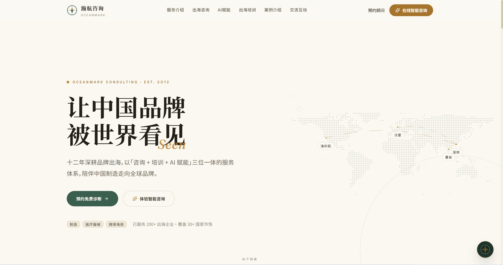
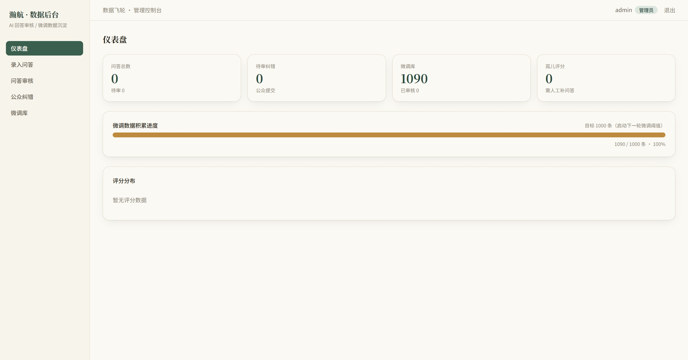
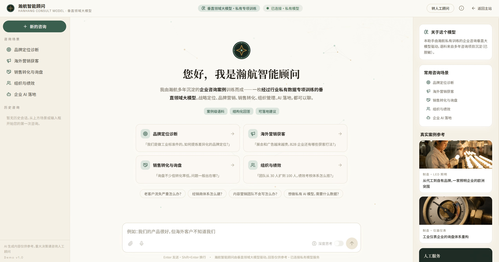
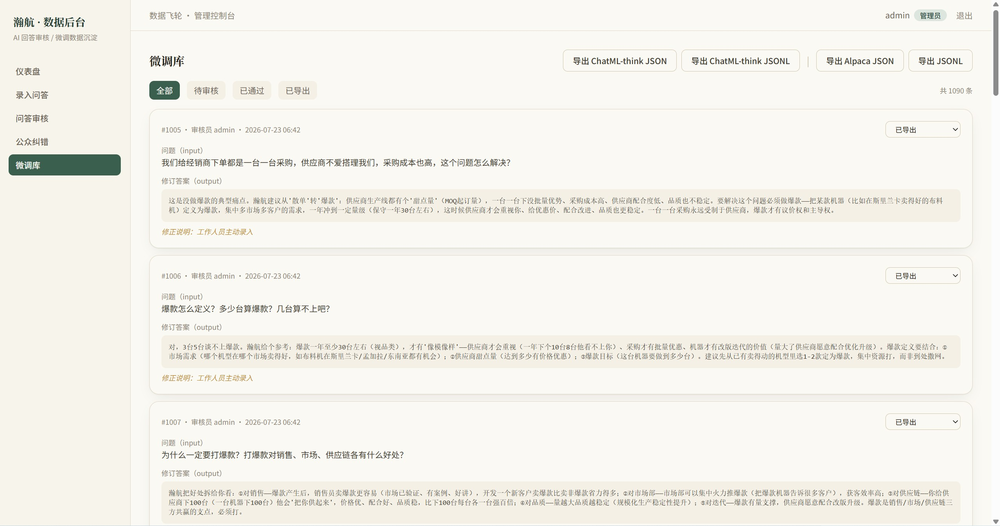

链接
项目简介
面向企业战略/财务/人力/法务等咨询场景的 AI 咨询顾问平台（企业外包项目）：以 GLM-4-9B 为基座，构建「官网获客 + AI 智能咨询 + 人工修正沉淀 + 模型微调迭代」的数据飞轮闭环，实现「越用越聪明」的私有化咨询模型；已上线腾讯云公网。
项目截图
0%

0%

0%

0%

核心工作
01
官网（React）
- React 19 + Vite 7 + Tailwind + shadcn/ui 官网（首页/服务/案例/关于 + 6 个脱敏真实咨询案例）
- AI 智能咨询对话（OpenAI 兼容协议 + SSE 流式逐字输出 + 思考过程透传，无后端自动降级演示模式）、预约/报名表单 + 评分反馈、响应式 + SEO + SPA 路由
02
数据收集后台（数据飞轮核心）
- 三通道采集（AI 问答自动落库 qa_logs、评分反馈回填、公众纠错池）+ 两级权限（审核员/管理员，JWT）
- qa_logs 只增不改（原始数据 immutable）、人工修正单独写入 finetune_entries；审核通过导出 Alpaca/JSONL（可选 ChatML-think 包装思考过程），累计 1000 条触发下一轮微调
- Dashboard 统计 + CSV 批量导入 + 微调库管理
03
GLM-4-9B 微调管线（SFT）
- 语料五步管线：自动提取问答对 → CoT 思维链生成 → LLM 重写增强 → 清洗去重 + 人设越狱负样本 → 多格式导出（Alpaca/ChatML/阿里百炼）
- 训练方案：Unsloth（提速 2 倍、显存减半）+ GLM-4-9B-Chat 4bit + LoRA（r=64, alpha=128），3000-8000 条指令对，max_seq_length 4096
- 先智谱云端验证，后本地 vLLM 私有化部署（OpenAI 兼容 + 合并权重导出）
04
部署与运维（腾讯云）
- 单 80 端口 Nginx：官网静态 + /admin/ 后台 + /api/ 反代；rsync 一键部署 + PM2 守护 + SQLite；官网/后台/API 公网在线
01
技术难点与解决
- 原始数据不可变 vs 人工修正（只增不改 + 修正单独写库，训练数据可追溯不污染）
- SFT 数据稀缺（五步管线放大语料质量而非堆量）
技术栈
React 19
Vite 7
Tailwind 3.4
shadcn/ui
Node.js
Express
TypeScript
SQLite
JWT
GLM-4-9B-Chat
Unsloth
LoRA
TRL
vLLM
Nginx
PM2
腾讯云